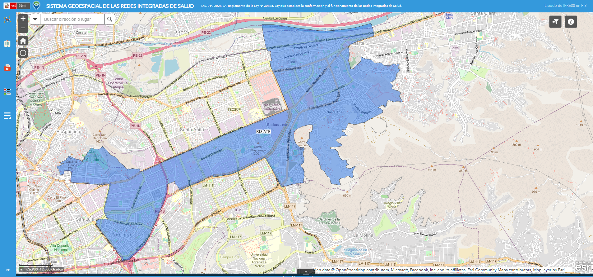

INDICADORES
Seguimiento de metas, indicadores de gestión y FED en tiempo real.
Plataforma oficial para el monitoreo, análisis y evaluación de indicadores de salud, producción de servicios y estrategias sanitarias en la jurisdicción de la Red Integrada de Salud Ate.
Información confiable y oportuna para la toma de decisiones y la mejora continua de los servicios de salud.

“Datos que transforman información en decisiones que salvan vidas.”
Seguimiento de metas, indicadores de gestión y FED en tiempo real.
Análisis de atendidos, atenciones y producción de servicios de salud.
Comparativo de desempeño entre establecimientos de salud.
Evaluación y ranking de las Unidades Productoras de Servicios.
Informes, tableros y reportes ejecutivos para la gestión institucional.
Pegar URL en config.js → gestion
Pegar URL en config.js → fed
Pegar URL en config.js → convenio
Pegar URL en config.js → curso
Pegar URL en config.js → inmunizaciones
Pegar URL en config.js → materno
Pegar URL en config.js → bucal
Pegar URL en config.js → mental
Pegar URL en config.js → metaxenicas
Pegar URL en config.js → urgencias
URL ya insertada en config.js → atenciones
Pegar URL en config.js → ipress
Pegar URL en config.js → ups
Pegar URL en config.js → rrhh
Pegar URL en config.js → calidad
Pegar URL en config.js → reportes